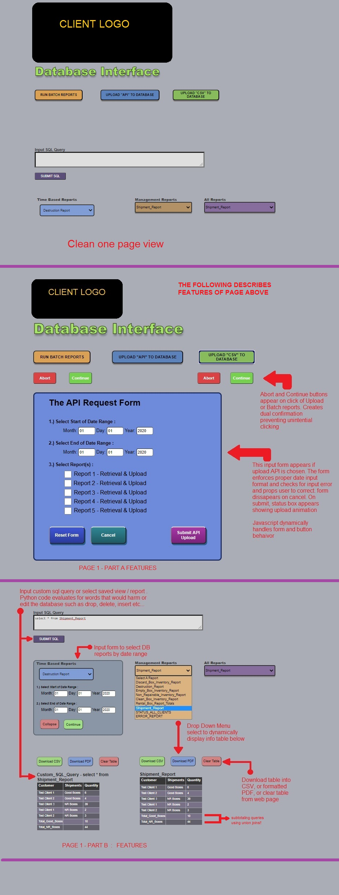

db_ui_screens.html

<!DOCTYPE html>

<meta name="viewport" content="width=device-width, initial-scale=0.86, maximum-scale=2.0, minimum-scale=0.86,">
<link rel="stylesheet" href= "style1.css">   

<html lang="en-us">

  

<head>
    <meta charset="UTF-8">
    <!-- <meta name="viewport" content="width=device-width, initial-scale=2"> -->
       <!-- <meta name="viewport" content="width=500, initial-scale=.5,  maximum-scale=.7 "> -->
    <link rel="stylesheet" href= "styleB.css">   
    <title> Database UI Features </title>
</head> 

 
</body>
</html>